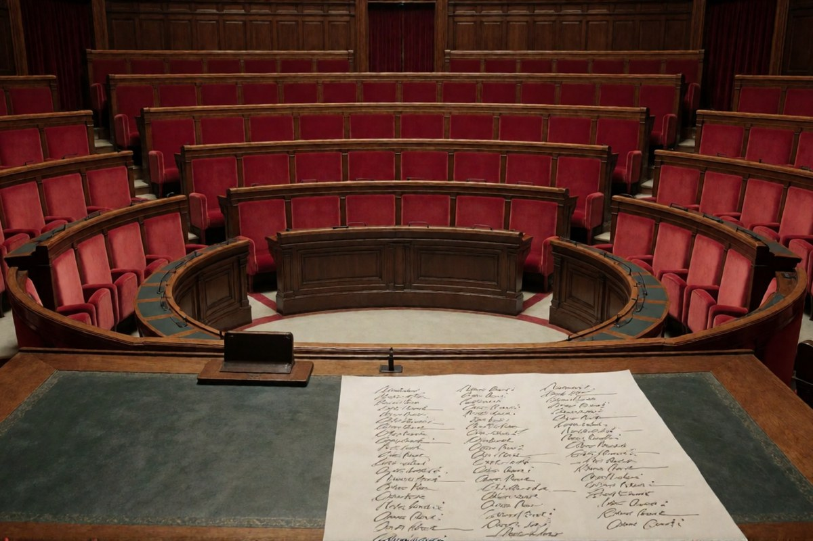

Politica italiana · 7 novembre 2026
Lega, i senatori firmano contro Romeo e Salvini li lascia fare

La maggioranza del gruppo chiede la sostituzione del capogruppo al Senato, in carica dal 2018. Romeo non si dimette e convoca l'assemblea per il 17 novembre. Sullo sfondo la Lombardia, la manovra e il congresso perso da Garavaglia.
di Franco Zanghì
Massimiliano Romeo guida i senatori della Lega dall'estate del 2018. Dal 4 novembre 2026 la maggioranza del suo gruppo ha firmato un documento per sostituirlo, e il 7 novembre, a Milano, Matteo Salvini ha fatto capire da che parte sta: ha detto che l'idea dei senatori è chiara e che all'assemblea lui non parteciperà.
Quante siano le firme non è chiaro. L'Ansa ne indica venti su ventinove, Il Foglio venticinque, altre testate ventisei. Il testo è stato presentato dal senatore Stefano Borghesi. Romeo, Salvini e Massimo Garavaglia non hanno firmato.
La mossa di Romeo
Romeo non si è dimesso. Ha convocato lui stesso l'assemblea del gruppo per il 17 novembre: se vogliono sostituirlo, dovranno farlo con un voto. Il regolamento del Senato, ricorda l'Ansa, non fissa un numero minimo di voti per cambiare un capogruppo: la decisione spetta al partito. Il nome più ricorrente per la successione è quello di Marco Dreosto, friulano, segretario della Lega in Friuli Venezia Giulia.
Un precedente recente esiste, in un altro partito: nel 2023 Forza Italia sostituì Licia Ronzulli come capogruppo al Senato con Maurizio Gasparri.
Da dove viene la rottura
Romeo, 55 anni, di Monza, è consigliere regionale in Lombardia dal 2010 e senatore dal 2018. Nel dicembre 2024 è diventato anche segretario della Lega lombarda, eletto per acclamazione, e già allora, scrive Il Giorno, disse a Salvini che se la Lega non parla più del Nord, al Nord i voti non li prende.
Ad agosto 2026 ha pubblicato un libro, «Fare la Lega, agenda per il rinnovamento». A settembre, alla festa del partito a Roma, il suo nome è sparito dalla scaletta degli interventi. Dopo l'annuncio del congresso straordinario, in un'intervista al Fatto Quotidiano ha detto che quel congresso Salvini se lo poteva fare da solo, che il partito era in caduta libera e che la Lega non doveva inseguire Roberto Vannacci sul suo terreno, ma tornare a parlare di tasse, burocrazia e federalismo.
Al congresso del 24 e 25 ottobre, a Milano, Romeo ha sostenuto la candidatura di Garavaglia. Salvini ha vinto con il 76 per cento. Dal palco Dreosto ha attaccato Romeo, dicendo che le diatribe personali non possono mettere in discussione il segretario; Romeo ha risposto che il problema non è dentro la Lega, ma fuori, fra gli elettori che non la votano più.
La manovra e la Lombardia
Lo stesso 4 novembre in cui è partita la raccolta di firme, alla Camera la Lega ha sostituito la relatrice della manovra: via Silvana Comaroli, considerata vicina al ministro dell'Economia Giancarlo Giorgetti e firmataria della candidatura di Garavaglia, al suo posto Alberto Gusmeroli. Garavaglia ha parlato testualmente di «dita negli occhi»; per le opposizioni è un modo di commissariare Giorgetti.
Il 6 novembre il consiglio federale ha sospeso i congressi provinciali lombardi fino alle politiche: restano in carica i segretari attuali, e quindi anche Romeo come segretario regionale. L'unico congresso celebrato è quello di Varese, l'8 novembre ad Albizzate, dove il segretario uscente Andrea Cassani, sindaco di Gallarate, ha battuto largamente Mirko Reto, sindaco di Casciago e critico della gestione del partito.
Il presidente della Lombardia Attilio Fontana ha detto che le promesse del congresso sono state disattese. Un partito di governo ha ovviamente il diritto di scegliere chi lo guida in Senato; la questione è il momento, con la manovra in discussione e il Nord che è il suo terreno storico.
Fonti
- Ansa, «Salvini liquida Romeo da capogruppo, l'idea dei senatori è chiara», 7 novembre 2026
- Il Foglio, «Lega, Romeo resiste e non si dimette: convoca l'assemblea dei senatori per il 17 novembre», 6 novembre 2026
- Il Foglio, «La resa dei conti di Salvini: 25 firme per cacciare Romeo», 4 novembre 2026
- Varesenoi, «Congresso provinciale Lega, vittoria netta di Cassani», 8 novembre 2026
- La Provincia di Varese, «Andrea Cassani confermato segretario provinciale: battuto largamente Mirko Reto», 8 novembre 2026
- Il Politico Web e Il Giorno, ricostruzioni del 6 e 7 novembre 2026 sui passaggi fra Romeo e Salvini
Il numero delle firme sul documento non coincide fra le fonti: venti per l'Ansa, venticinque per Il Foglio, ventisei per altre testate. L'esito del congresso di Varese dell'8 novembre è stato aggiunto in sede di ricontrollo, dopo la stesura della bozza.